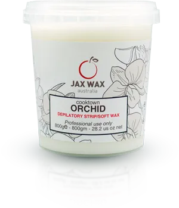
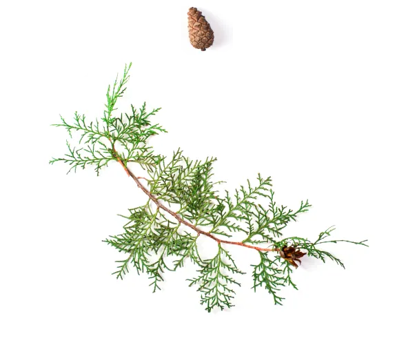
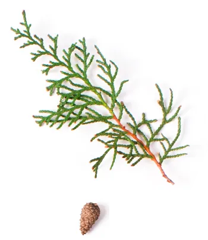

軟蠟
如果您喜愛花香調，庫克蘭花、薰香風信子、清新玉蘭是您最佳的選擇，如果喜歡果香調，可以選擇萊姆椰子，我們也提供低調優雅的木質調-黑檀雪松，快來挑選屬於您的風格的香氛軟蠟吧!

花香調
庫克蘭花
由合成樹脂和二氧化鈦製成的玫瑰香氛，最為適合敏感肌類型。滑順好抹零殘蠟，第一次用也能輕鬆上手。推薦用於巴西式除毛和敏感區域。

花香調
薰香風信子
薰衣草精油可軟化皮膚，滑順配方提供快速精細操作，優越的抓毛力零殘留。推薦用於所有皮膚區域和最短、最堅韌毛髮。

花香調
清新玉蘭
木蘭和金銀花香氛，適合除毛師及固定除毛經驗的你，蠟能上的極薄，高效操作能達成卓越的除毛效果。適用於所有類型毛髮。
果香調
萊姆椰子
伴隨濃郁椰子與萊姆香氣，含有二氧化鈦和椰子油的光滑不透明配方。推薦用於強韌毛髮和嬌嫩肌膚的您。

木質調
黑檀雪松
去除頑固、多方向的粗毛。推薦給有頑固毛髮的男性和女性。


